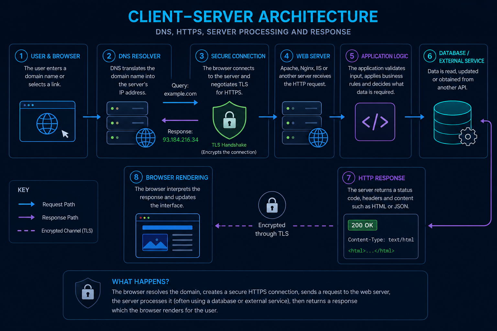

Request and Response Process
The following diagram explains a typical first request to a secure website. Some stages may be cached or handled by distributed services, but the flow shows the main responsibilities.

Diagram Explanation
DNS is normally required before the browser can send a request because network communication uses an IP address rather than the domain name entered by the user (Kurose and Ross, 2021). Cached records can avoid a full lookup and reduce delay. However, caching can temporarily preserve an older address after a DNS record changes, so it improves efficiency at the cost of immediate consistency.
HTTPS uses TLS to protect HTTP communication. During the connection process, the server presents a certificate so the browser can assess its identity. TLS 1.3 provides confidentiality and integrity protection for data in transit (Rescorla, 2018). However, HTTPS does not prove that the application itself is trustworthy or free from vulnerabilities; it protects the connection rather than every part of the service.
An HTTP request contains a method, target, headers and, where required, content. GET is defined as a safe method for retrieving a representation, while POST asks the target resource to process the enclosed content (Fielding, Nottingham and Reschke, 2022). In practice, correct method selection still depends on developers following the protocol semantics consistently.
The web server may return a static file directly or pass the request to application code. The application may communicate with a database, authentication service or external API. This separation can support maintainability, although each additional service creates another dependency that must be secured and monitored.
The response contains a status code, headers and content. The browser may receive HTML for a webpage or JSON for an API request, then render or update the interface. HTTP standardisation enables different clients and servers to interoperate, but network delay, caching and application processing can still affect the experience perceived by the user (Fielding, Nottingham and Reschke, 2022).